03. Halaman terlindung mengalihkan ke login LULUS
Fungsi: Semua halaman selain login/panduan publik wajib login.
Hasil yang diharapkan: Dialihkan ke /login.
- Langkahnya: tanpa masuk, buka
/dashboard.
Hasil pengujian: Dialihkan ke /login.

| Item | Nilai |
|---|---|
| Aplikasi | SIMONKEB (Laravel 12, PHP 8.3, Inertia v2, Vue 3) |
| Lingkungan | Lokal, SQLite khusus uji, http://127.0.0.1:8123 |
| Data awal | php artisan migrate:fresh --seed (8 akun, 4 instansi, 68 unit, 21 jabatan, ±1.080 pegawai, 380 ABK, 4 usulan) |
| Jumlah skenario | 53 |
| Lulus | 53 |
| Temuan (belum lulus) | 0 |
| Gagal (kegagalan pengujian) | 0 |
password)| Peran | Keterangan | |
|---|---|---|
| admin | admin@simonkeb.test | Administrator |
| bkn | bkn@simonkeb.test | Verifikator BKN |
| kemenpan | kemenpan@simonkeb.test | Validator Kemenpan |
| pimpinan | pimpinan@simonkeb.test | Pimpinan (hanya baca) |
| kab | kab-sjt@simonkeb.test | Operator Pemerintah Kabupaten Sejahtera |
| kot | kot-mdn@simonkeb.test | Operator Kota Madani |
| prov | prov-nsn@simonkeb.test | Operator Provinsi Nusantara |
| kl | kl-adm@simonkeb.test | Operator Kementerian |
Pengujian mengikuti alur kerja nyata aplikasi: A → B → C → D → E → F → G. Tiap tahap memakai hasil tahap sebelumnya.
| Tahap | Bagian | Hubungan dengan tahap sebelumnya | Skenario |
|---|---|---|---|
| 1 | A. Akses & autentikasi | Tahap awal. Tanpa login dan hak akses yang benar, tahap lain tidak dapat dijalankan; akun yang dibuktikan di sini dipakai di seluruh tahap berikutnya. | 6 |
| 2 | B. Master data organisasi | Setelah akses terbukti aman, data dasar disiapkan secara berurutan: instansi, lalu unit kerja, lalu jabatan, lalu pegawai. Data ini menjadi bahan tahap C dan E. | 14 |
| 3 | C. Analisis Beban Kerja (ABK) | Setelah organisasi dan pegawai tersedia, beban kerja tiap jabatan dihitung menjadi kebutuhan pegawai. Hasilnya menjadi dasar tahap D dan E. | 6 |
| 4 | D. Perencanaan | Berbekal kebutuhan hasil ABK dan data pegawai, tahap ini memproyeksikan lima tahun ke depan serta merencanakan redistribusi dan formasi. | 3 |
| 5 | E. Usulan kebutuhan & alur persetujuan | Kebutuhan hasil ABK dan perencanaan dirangkum menjadi usulan, lalu diproses lintas peran sampai ditetapkan atau ditolak. | 11 |
| 6 | F. Monitoring, analitik, histori, peringatan, laporan | Setelah usulan berjalan, tahap ini memantau capaiannya dan menghasilkan laporan untuk pimpinan. | 5 |
| 7 | G. Administrasi & pendukung | Tahap penutup: pengelolaan pengguna dan fitur pendukung yang menopang seluruh tahap sebelumnya. | 8 |
instansi_id (admin dengan filter "Semua instansi" menekan Tambah), instansi dipilih, lalu dropdown kembali kosong setelah daftar unit/jabatan dimuat ulang; bila disimpan server menolak karena instansi_id terkirim 0. Penyebab: pemuatan ulang sebagian (router.reload({ only })) mengubah URL sehingga isi halaman dibuat ulang (:key="$page.url" di layout), sedangkan prop instansiId tidak ikut diperbarui sehingga form diinisialisasi kosong. Skenario 11 kini memverifikasi perbaikannya.instansiId ditambahkan ke daftar only pada UnitKerja/Form.vue, Pegawai/Form.vue, dan Anjab/Form.vue.lang/id, sehingga Laravel memakai bahasa Inggris.lang/id/validation.php (termasuk nama atribut), locale bawaan id; diuji di FormUnitKerjaTest.PUT /unit-kerja/{id} tanpa parent_id menghasilkan "Undefined array key parent_id". Formulir di aplikasi selalu mengirim field ini sehingga hanya klien non-UI yang terdampak.$data['parent_id'] ??= null di UnitKerjaController::update; diuji di FormUnitKerjaTest.memory_limit=128M bawaan, PDF ABK gagal (500, memori dompdf habis). Pengujian ini memakai 768 MB dan seluruh 18 unduhan laporan serta PDF ABK berhasil.memory_limit ≥ 512 MB, atau optimalkan kueri/tampilan PDF.| No | Skenario | Akun | Hasil |
|---|---|---|---|
| 01 | Halaman login tampil | tamu | LULUS |
| 02 | Login dengan password salah ditolak | tamu | LULUS |
| 03 | Halaman terlindung mengalihkan ke login | tamu | LULUS |
| 04 | Dashboard admin dan menu lengkap | admin | LULUS |
| 05 | Pimpinan hanya-baca: menu terbatas | pimpinan | LULUS |
| 06 | Operator dibatasi ke instansinya | kab | LULUS |
| 07 | Daftar instansi dan pencarian | admin | LULUS |
| 08 | Tambah instansi | admin | LULUS |
| 09 | Validasi: kode instansi tidak boleh kembar | admin | LULUS |
| 10 | Ubah instansi | admin | LULUS |
| 11 | Verifikasi perbaikan: pilihan instansi tetap terpilih pada form Unit, Pegawai, dan ABK | admin | LULUS |
| 12 | Tambah unit kerja (hierarki) | admin | LULUS |
| 13 | Nonaktifkan / aktifkan unit | admin | LULUS |
| 14 | Peta jabatan | admin | LULUS |
| 15 | Tambah jabatan referensi | admin | LULUS |
| 16 | Tambah pegawai (existing) | admin | LULUS |
| 17 | Validasi NIP pegawai | admin | LULUS |
| 18 | Ubah pegawai dan riwayat mutasi | admin | LULUS |
| 19 | Halaman impor Excel dan unduh templat | admin | LULUS |
| 20 | Halaman integrasi SIASN | admin | LULUS |
| 21 | Daftar ABK dan filter | admin | LULUS |
| 22 | Tambah ABK dan verifikasi rumus | admin | LULUS |
| 23 | Detail ABK, ubah status dan PDF | admin | LULUS |
| 24 | Salin ABK ke tahun lain | admin | LULUS |
| 25 | Ekspor ABK, templat impor, rekap unit | admin | LULUS |
| 26 | Validasi: ABK tanpa jabatan ditolak | admin | LULUS |
| 27 | Proyeksi 5 tahun dan ekspor | admin | LULUS |
| 28 | Saran redistribusi pegawai | admin | LULUS |
| 29 | Formasi / pengisian formasi | admin | LULUS |
| 30 | Daftar usulan operator | kab | LULUS |
| 31 | Buat usulan baru (draft) lalu hapus | kab | LULUS |
| 32 | Isi rincian jabatan (tarik dari ABK) dan ajukan | kl | LULUS |
| 33 | Verifikator BKN: mulai verifikasi | bkn | LULUS |
| 34 | Verifikator BKN: beri rekomendasi (pertimbangan teknis) | bkn | LULUS |
| 35 | Validator Kemenpan: mulai validasi | kemenpan | LULUS |
| 36 | Penetapan kebutuhan dengan nomor SK | kemenpan | LULUS |
| 37 | Cabang: usulan dikembalikan untuk perbaikan | bkn | LULUS |
| 38 | Operator melihat catatan pengembalian dan mengajukan ulang | prov | LULUS |
| 39 | Cabang: usulan ditolak | kemenpan | LULUS |
| 40 | Daftar penetapan | admin | LULUS |
| 41 | Monitoring kebutuhan vs existing | admin | LULUS |
| 42 | Analitik | admin | LULUS |
| 43 | Histori existing dan unit tanpa pergerakan | admin | LULUS |
| 44 | Peringatan dini: deteksi dan tindak lanjut | admin | LULUS |
| 45 | Laporan: seluruh jenis (Excel + PDF) | admin | LULUS |
| 46 | Tambah pengguna | admin | LULUS |
| 47 | Hapus pengguna (dialog konfirmasi) | admin | LULUS |
| 48 | Akun pribadi: ganti password & 2FA | admin | LULUS |
| 49 | Notifikasi | bkn | LULUS |
| 50 | Log audit | admin | LULUS |
| 51 | Panduan pengguna dan unduh PDF | admin | LULUS |
| 52 | Pedoman rumus ABK | admin | LULUS |
| 53 | Hapus instansi: penjaga usulan dan pembersihan data uji | admin | LULUS |
Memastikan hanya pengguna sah yang masuk, dan setiap peran melihat menu yang sesuai.
Hubungan dengan tahap sebelumnya: Tahap awal. Tanpa login dan hak akses yang benar, tahap lain tidak dapat dijalankan; akun yang dibuktikan di sini dipakai di seluruh tahap berikutnya.
Fungsi: Pintu masuk aplikasi. Tersedia login manual (email + password) karena LOGIN_MANUAL=true; SSO SIASN dimatikan di lingkungan uji.
Hasil yang diharapkan: Formulir email dan password tampil.
/login tanpa masuk.Hasil pengujian: Formulir login tampil.
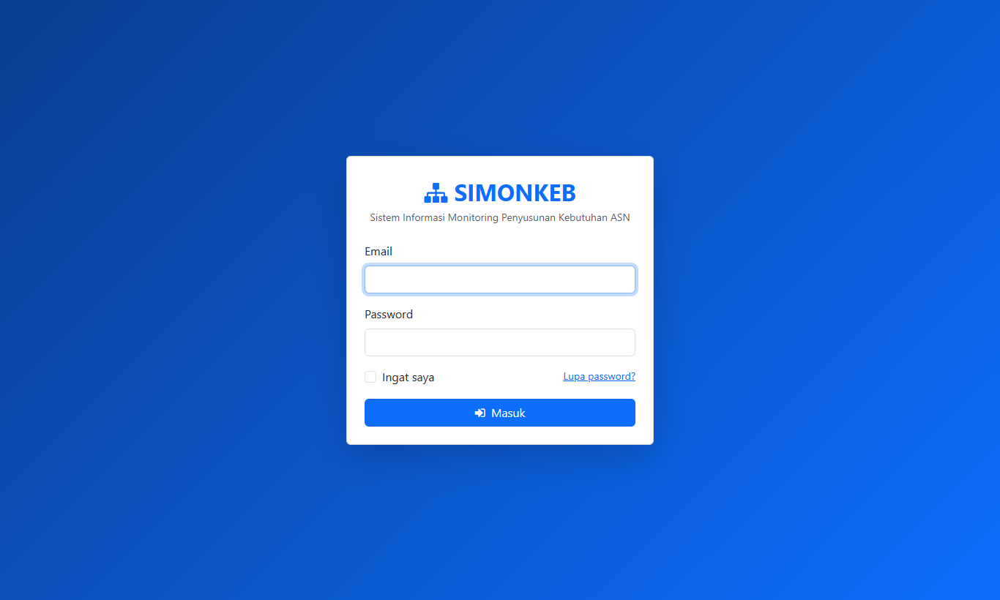
Fungsi: Validasi kredensial.
Hasil yang diharapkan: Tetap di halaman login dan muncul pesan kegagalan, tidak masuk ke dashboard.
admin@simonkeb.test dan password salah.Hasil pengujian: Ditolak, tetap di halaman login.
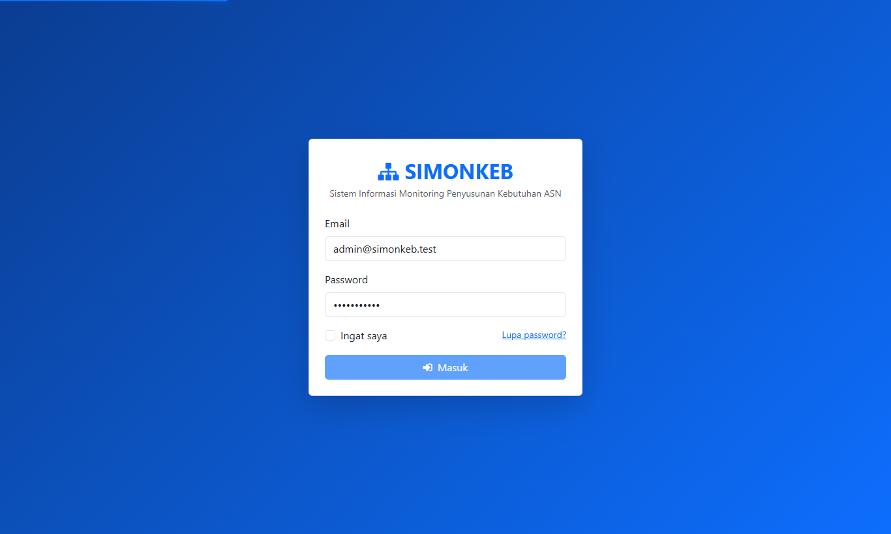
Fungsi: Semua halaman selain login/panduan publik wajib login.
Hasil yang diharapkan: Dialihkan ke /login.
/dashboard.Hasil pengujian: Dialihkan ke /login.
Fungsi: Admin melihat seluruh menu (master data, ABK, perencanaan, usulan, monitoring, laporan, pengaturan).
Hasil yang diharapkan: Dashboard tampil; sidebar memuat semua kelompok menu.
admin@simonkeb.test.Hasil pengujian: Dashboard tampil, 26 tautan menu.
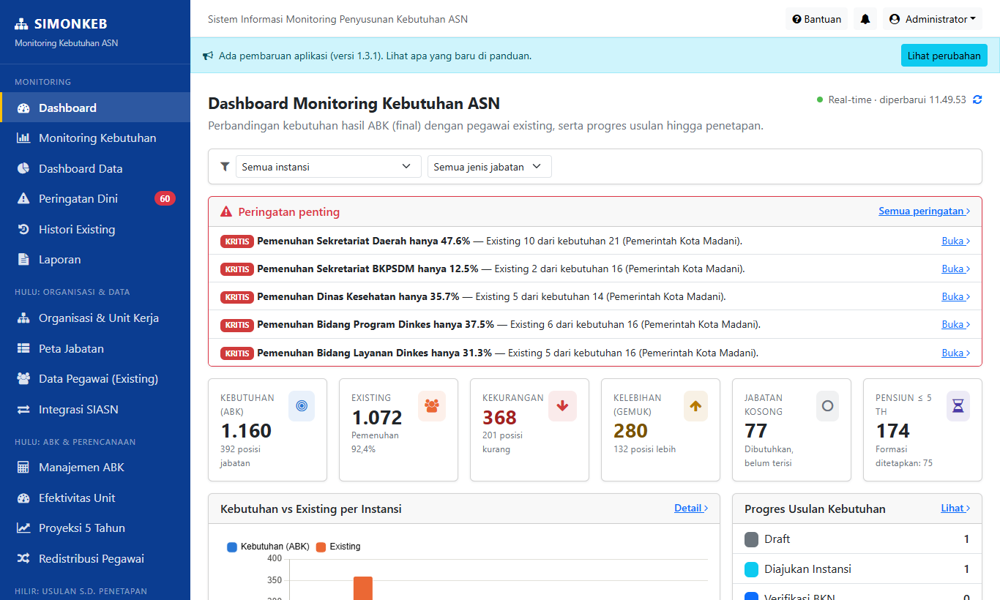
Fungsi: Peran pimpinan tidak boleh mengubah data.
Hasil yang diharapkan: Halaman tambah ditolak (403); daftar pegawai tidak punya tombol Tambah.
pimpinan@simonkeb.test./pegawai/create (halaman tambah).Hasil pengujian: Tambah ditolak 403; tombol Tambah tidak tampil di daftar.
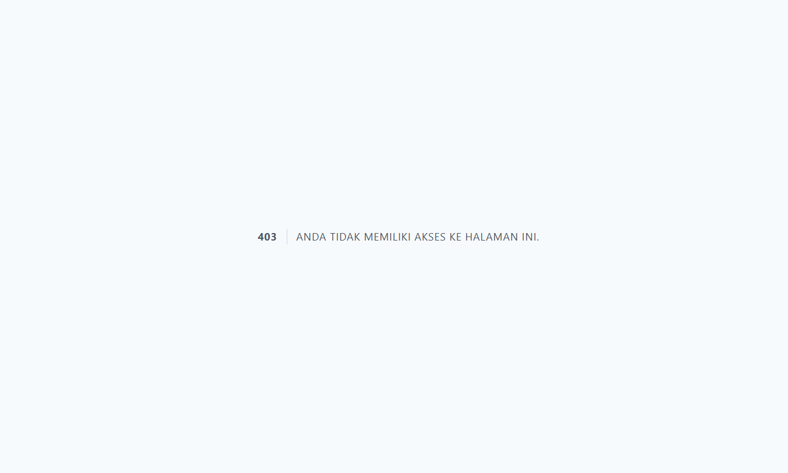
Fungsi: Operator instansi tidak boleh melihat data instansi lain (Controller::scoped() / authorizeInstansi()).
Hasil yang diharapkan: Ditolak 403.
kab-sjt@simonkeb.test (Pemerintah Kabupaten Sejahtera)./usulan/3).Hasil pengujian: Akses lintas instansi ditolak (403).
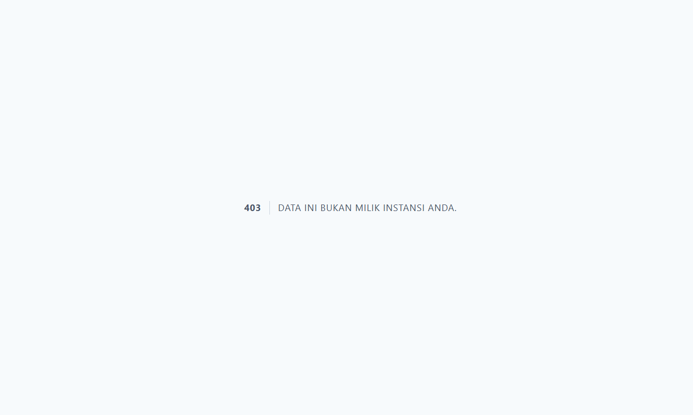
Instansi → Unit kerja → Jabatan → Pegawai. Semua dites dengan data baru "Uji Dokumentasi" agar data demo tidak tercampur.
Hubungan dengan tahap sebelumnya: Setelah akses terbukti aman, data dasar disiapkan secara berurutan: instansi, lalu unit kerja, lalu jabatan, lalu pegawai. Data ini menjadi bahan tahap C dan E.
Fungsi: Mengelola instansi pengguna aplikasi (kabupaten, kota, provinsi, kementerian).
Hasil yang diharapkan: Daftar 4 instansi demo (KL-ADM, KAB-SJT, KOT-MDN, PROV-NSN); pencarian menyaring.
Sejahtera pada kotak cari.Hasil pengujian: Daftar dan pencarian berfungsi.
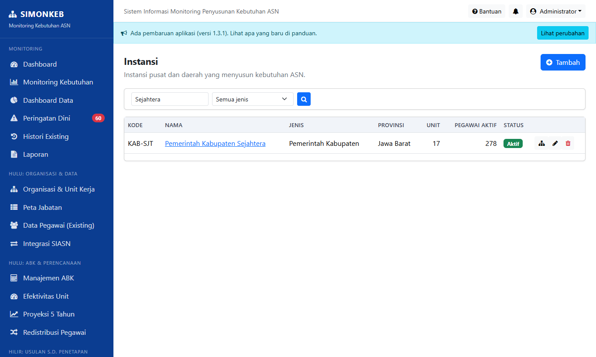
Fungsi: Membuat instansi baru.
Hasil yang diharapkan: Kembali ke daftar, instansi baru tampil, ada notifikasi sukses.
UJI-01, Nama Instansi Uji Dokumentasi, pilih Jenis.Hasil pengujian: Instansi UJI-01 tersimpan.
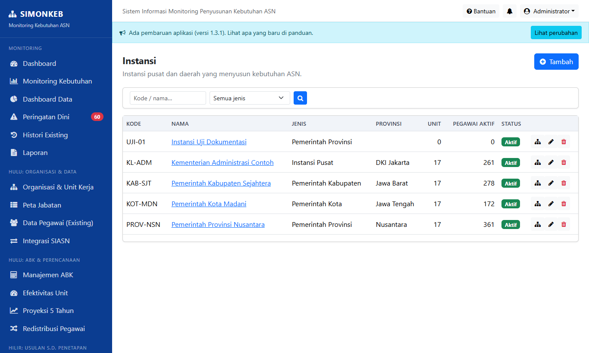
Fungsi: Mencegah duplikasi kode.
Hasil yang diharapkan: Muncul pesan kesalahan pada kolom Kode, data tidak tersimpan.
UJI-01 lagi.Hasil pengujian: Ditolak dengan pesan galat di kolom Kode.
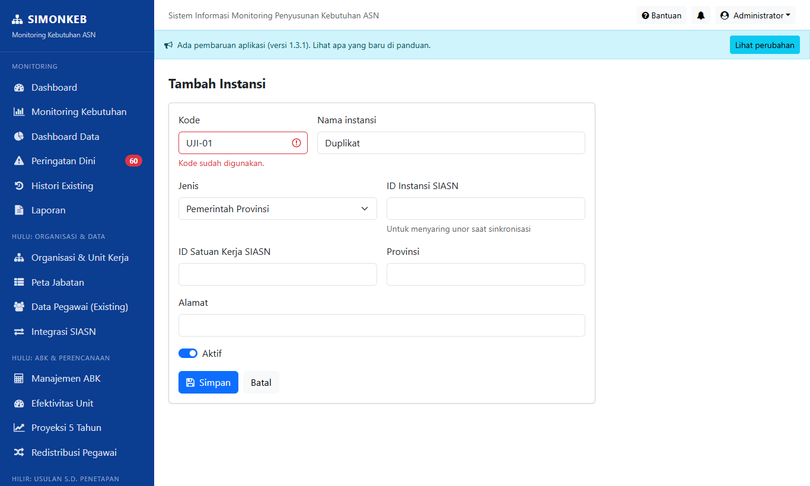
Fungsi: Mengubah data instansi.
Hasil yang diharapkan: Perubahan tersimpan.
Provinsi Uji.Hasil pengujian: Provinsi diubah.
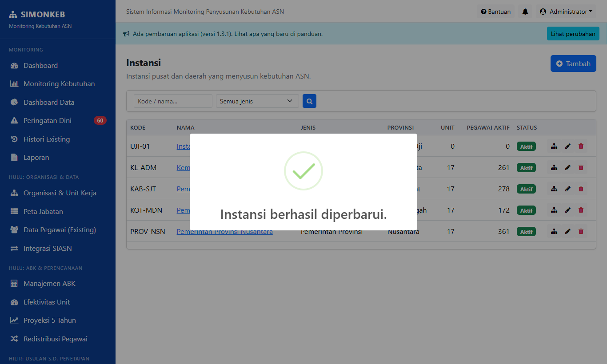
Fungsi: Form Tambah Unit/Pegawai/ABK dapat dibuka tanpa instansi terpilih (admin dengan filter "Semua instansi"), lalu instansi dipilih dari dropdown. Memilih instansi memuat ulang daftar unit/jabatan.
Hasil yang diharapkan: Pilihan instansi tetap terpilih sampai form disimpan.
/unit-kerja/create, /pegawai/create, dan /anjab/create (tanpa parameter instansi_id).Hasil pengujian: Pilihan instansi tetap terpilih.
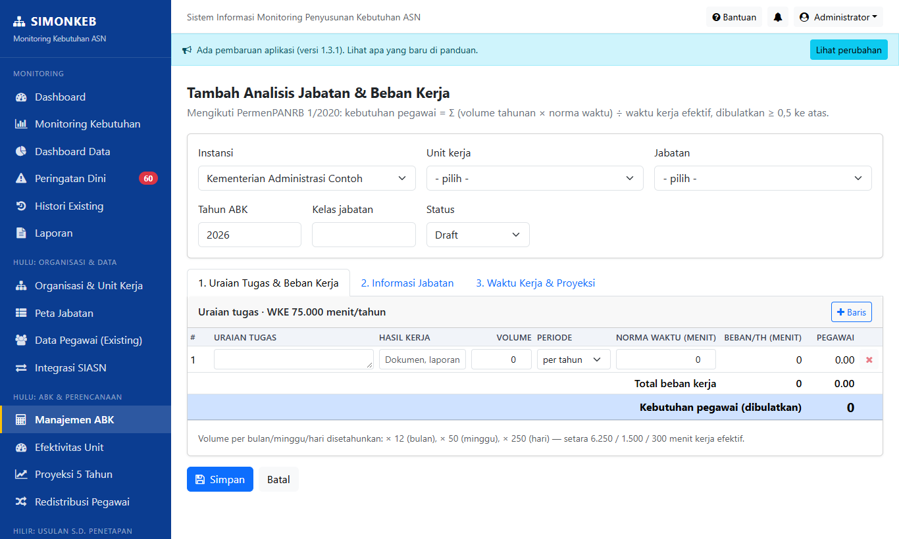
Fungsi: Menyusun struktur organisasi bertingkat per instansi.
Hasil yang diharapkan: Unit tampil pada daftar/peta instansi uji.
UJI-SEK, Nama Sekretariat Uji, Urutan 1.Hasil pengujian: Unit tersimpan.
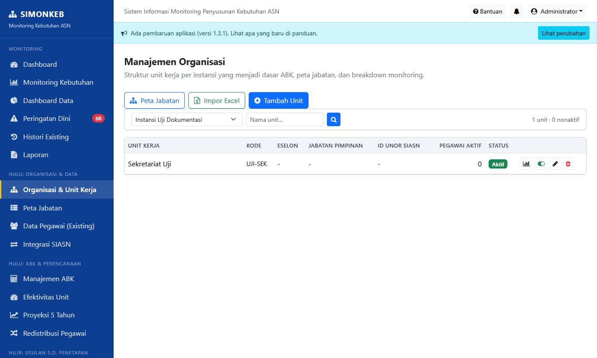
Fungsi: Unit yang tidak aktif tidak dihitung dalam monitoring.
Hasil yang diharapkan: Status berganti.
Hasil pengujian: Tombol status diklik tanpa galat.
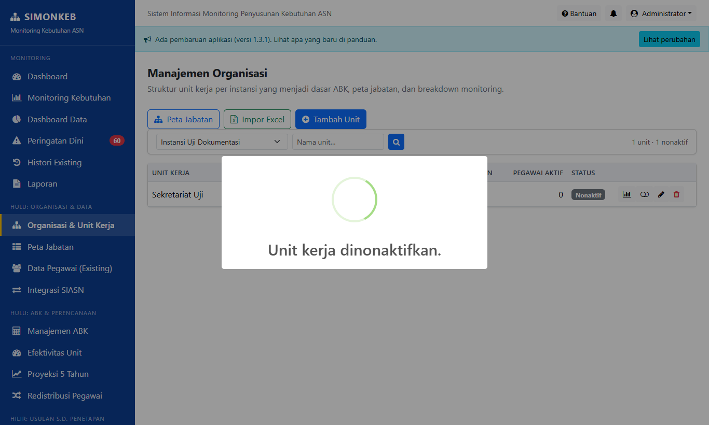
Fungsi: Tampilan hierarki unit beserta jabatan dan jumlah pegawai.
Hasil yang diharapkan: Peta tampil.
Hasil pengujian: Peta jabatan tampil.
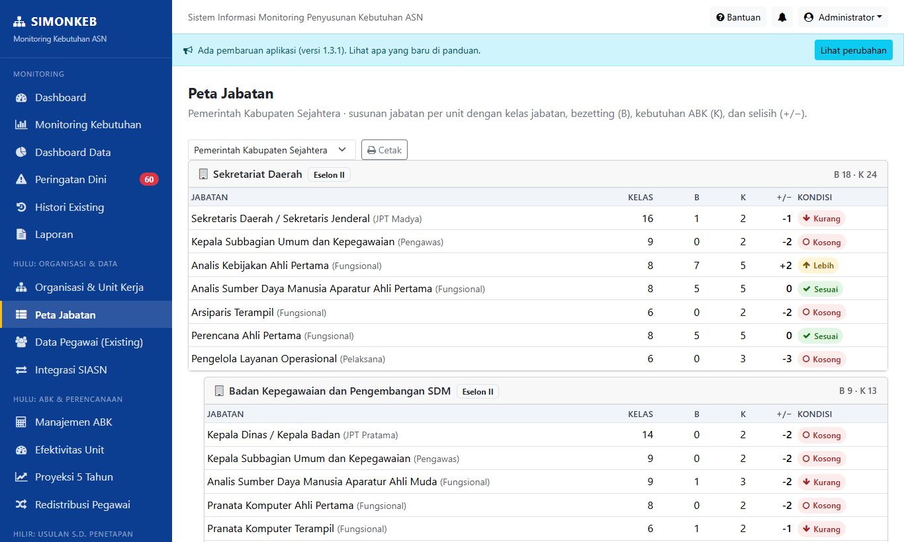
Fungsi: Katalog jabatan (struktural/JF/JPT) beserta kelas jabatan, BUP, dan estimasi belanja.
Hasil yang diharapkan: Jabatan baru tampil di daftar.
UJI-JAB, Nama Analis Uji Kebijakan, pilih Jenis jabatan, Kelas 9, BUP 58, belanja 120000000.Hasil pengujian: Jabatan tersimpan.
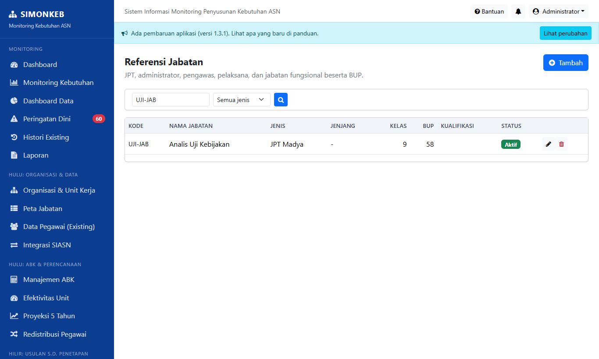
Fungsi: Data existing yang dibandingkan dengan kebutuhan hasil ABK. Menyimpan tanggal lahir untuk menghitung TMT pensiun.
Hasil yang diharapkan: Pegawai tersimpan dan tampil di daftar.
199001012015011001, Nama Pegawai Uji Dokumentasi, Tanggal lahir 1990-01-01.Hasil pengujian: Pegawai tersimpan.
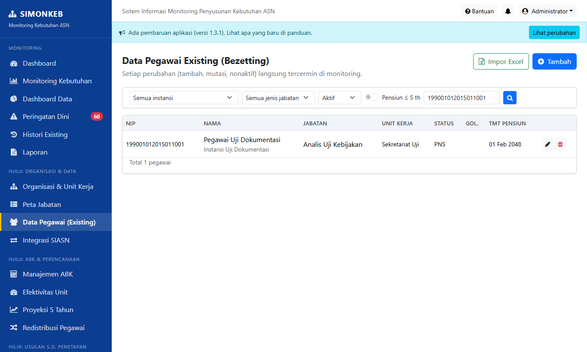
Fungsi: NIP harus 18 digit dan unik.
Hasil yang diharapkan: Ditolak dengan pesan galat.
123.Hasil pengujian: Ditolak dengan pesan galat.
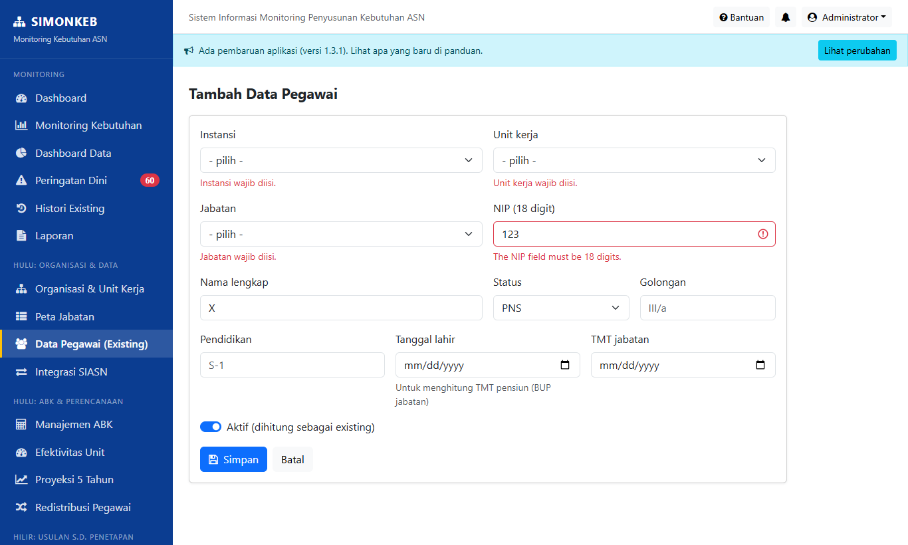
Fungsi: Perubahan unit/jabatan/status dicatat otomatis sebagai riwayat; dasar analisis pergerakan data (histori).
Hasil yang diharapkan: Perubahan tersimpan; panel Riwayat jabatan & mutasi menampilkan catatan.
III/b, isi keterangan SK Uji 1/2026.Hasil pengujian: Perubahan tersimpan; panel riwayat tampil.
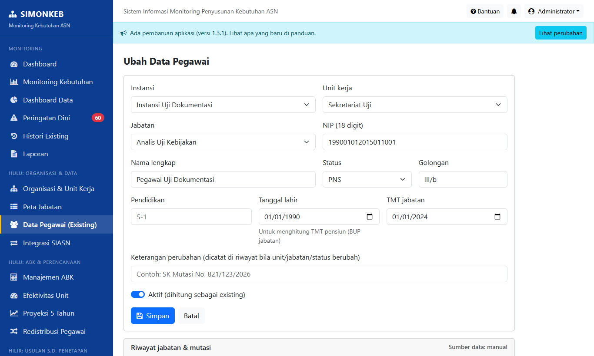
Fungsi: Memasukkan banyak pegawai/unit/ABK sekaligus dari Excel.
Hasil yang diharapkan: Halaman tampil; templat terunduh sebagai .xlsx.
Hasil pengujian: Halaman tampil. Templat: HTTP 200, application/vnd.openxmlformats-officedocument.spreadsheetml.sheet, 6.602 byte
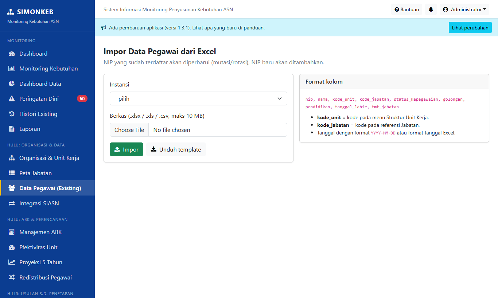
Fungsi: Sinkronisasi data pegawai dari SIASN BKN. Dinonaktifkan di lingkungan uji (SIASN_ENABLED=false).
Hasil yang diharapkan: Halaman tampil; sinkronisasi memberi pesan bahwa integrasi tidak aktif/kredensial belum diatur (bukan galat 500).
Hasil pengujian: Tombol Sinkronkan nonaktif karena integrasi SIASN dimatikan (SIASN_ENABLED=false), sesuai harapan.
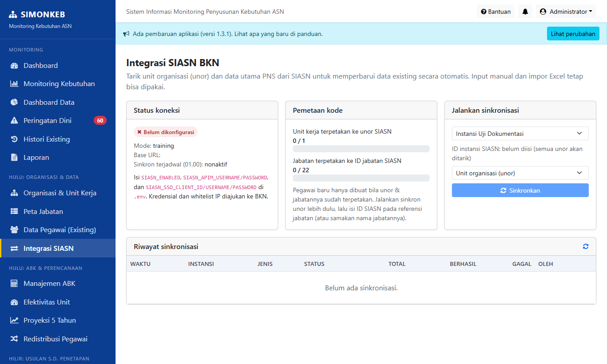
Rumus PermenPANRB 1/2020: kebutuhan = Σ(volume disetahunkan × norma waktu) ÷ WKE 75.000, pecahan ≥ 0,5 dibulatkan ke atas.
Hubungan dengan tahap sebelumnya: Setelah organisasi dan pegawai tersedia, beban kerja tiap jabatan dihitung menjadi kebutuhan pegawai. Hasilnya menjadi dasar tahap D dan E.
Fungsi: Daftar analisis jabatan & beban kerja per jabatan/unit/tahun.
Hasil yang diharapkan: Daftar ABK demo tampil dan tersaring.
Analis.Hasil pengujian: Daftar dan filter berfungsi.
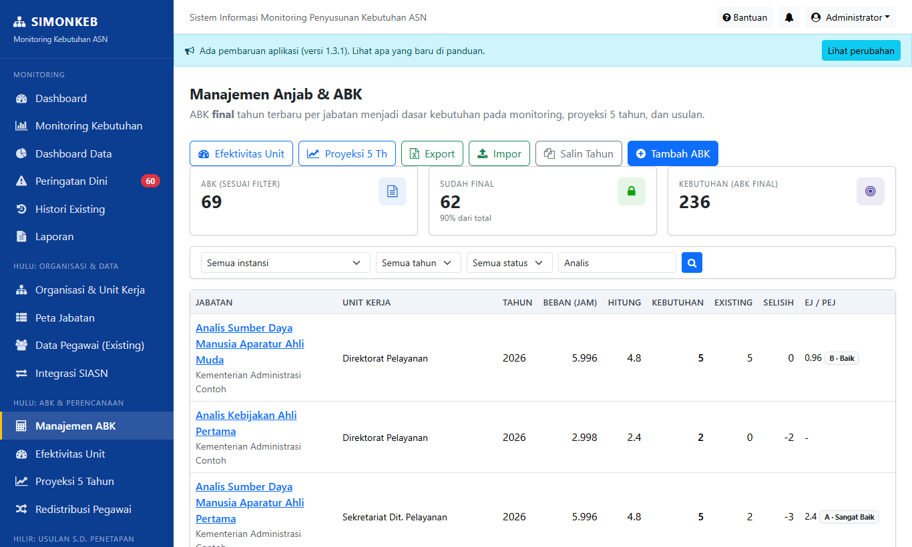
Fungsi: Menghitung kebutuhan pegawai otomatis dari uraian tugas.
Hasil yang diharapkan: Kebutuhan terhitung 2 (1,53 dibulatkan ke atas); ABK tersimpan.
Menyusun laporan bulanan, volume 10, periode per bulan, norma 500 menit → 10×12×500 = 60.000.Rapat koordinasi, volume 110, per tahun, norma 500 → 55.000.Hasil pengujian: Total 115.000 mnt ÷ 75.000 = 1,53 → kebutuhan 2 (benar).
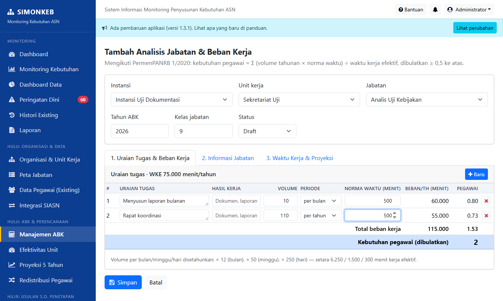
Fungsi: Menampilkan hasil ABK; status draft/final; cetak PDF.
Hasil yang diharapkan: Detail tampil; PDF terunduh (application/pdf).
Hasil pengujian: Detail tampil. PDF: HTTP 200, application/pdf, 879.434 byte
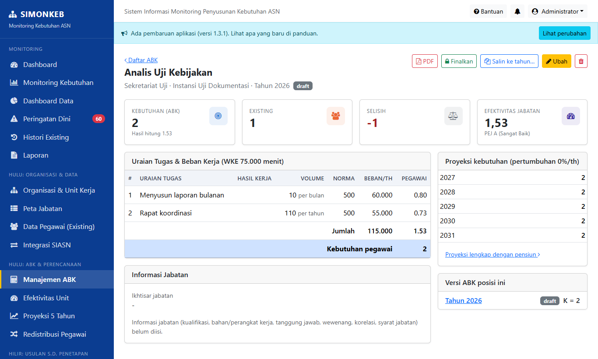
Fungsi: Menyalin ABK tahun berjalan ke tahun berikutnya sebagai bahan revisi.
Hasil yang diharapkan: ABK tahun 2027 terbentuk.
Hasil pengujian: Salin dijalankan: "ABK disalin ke tahun 2027 sebagai draft. Sesuaikan volume beban kerjanya."
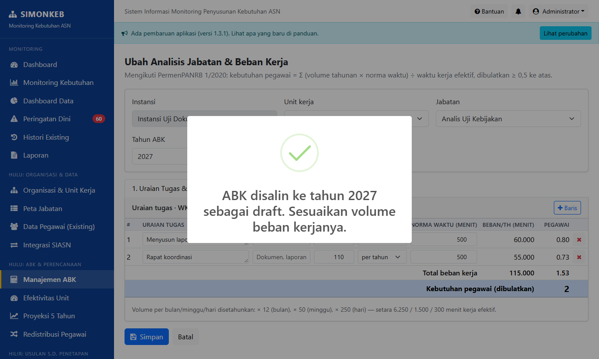
Fungsi: Ekspor Excel, templat untuk impor massal, dan rekap efektivitas per unit.
Hasil yang diharapkan: Berkas Excel terunduh; rekap unit tampil.
Hasil pengujian: Ekspor: HTTP 200, application/vnd.openxmlformats-officedocument.spreadsheetml.sheet, 28.172 byte. Templat: HTTP 200, application/vnd.openxmlformats-officedocument.spreadsheetml.sheet, 6.622 byte. Rekap unit tampil.
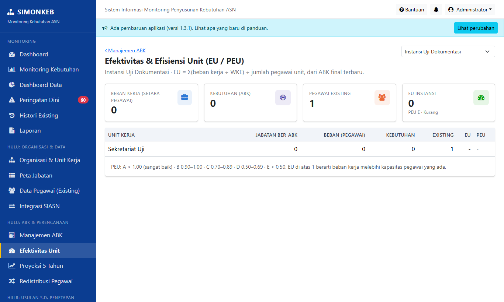
Fungsi: Formulir ABK memaksa jabatan dan uraian tugas terisi.
Hasil yang diharapkan: Tetap di form, pesan galat tampil.
Hasil pengujian: Ditolak dengan pesan galat.
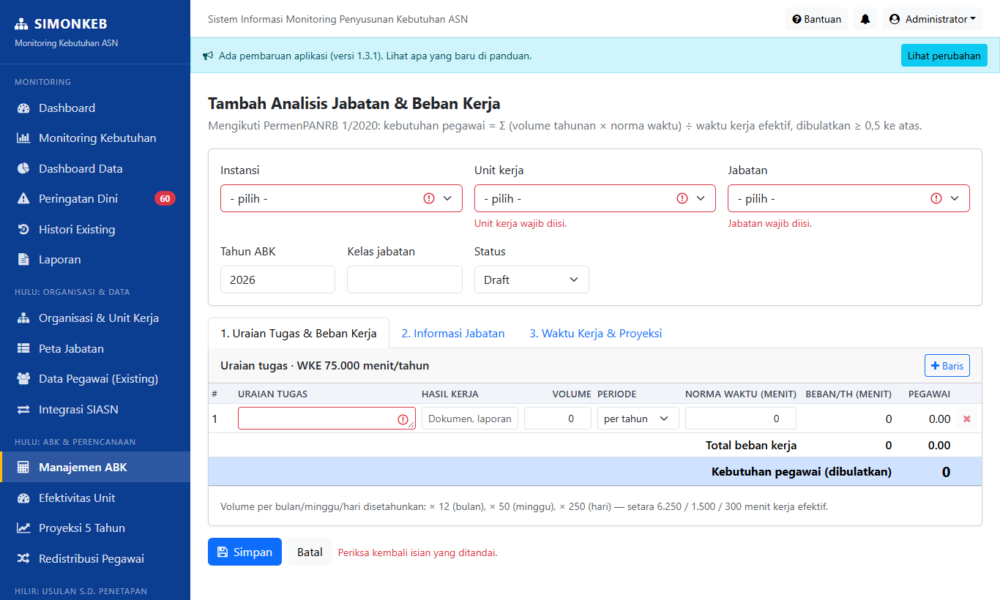
Proyeksi lima tahun, redistribusi pegawai, dan formasi.
Hubungan dengan tahap sebelumnya: Berbekal kebutuhan hasil ABK dan data pegawai, tahap ini memproyeksikan lima tahun ke depan serta merencanakan redistribusi dan formasi.
Fungsi: Memproyeksikan kebutuhan vs pegawai (pensiun, pertumbuhan beban kerja) lima tahun ke depan.
Hasil yang diharapkan: Tabel/grafik proyeksi tampil; ekspor sukses.
Hasil pengujian: Proyeksi tampil. Ekspor: HTTP 200, application/vnd.openxmlformats-officedocument.spreadsheetml.sheet, 13.138 byte
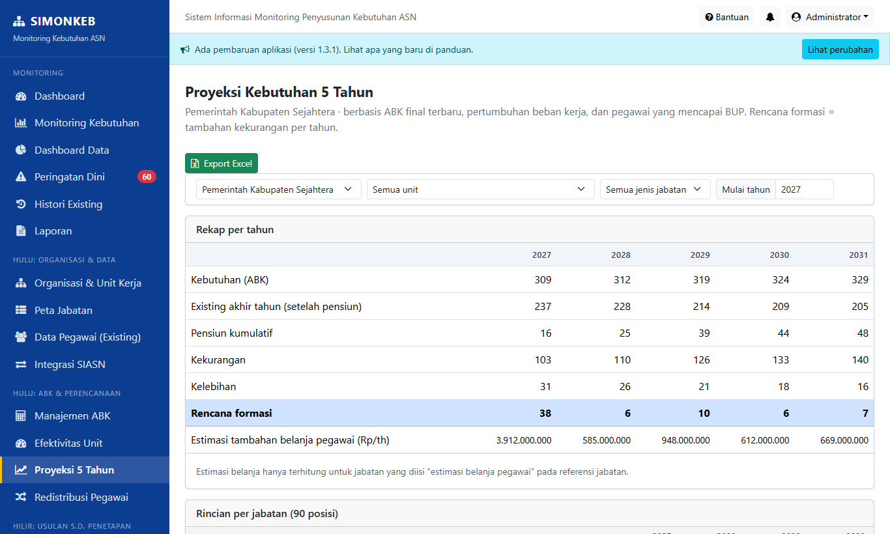
Fungsi: Menyarankan pemindahan dari jabatan gemuk ke jabatan kurang pada instansi yang sama.
Hasil yang diharapkan: Halaman tampil dengan saran (atau pesan kosong).
Hasil pengujian: Halaman redistribusi tampil.
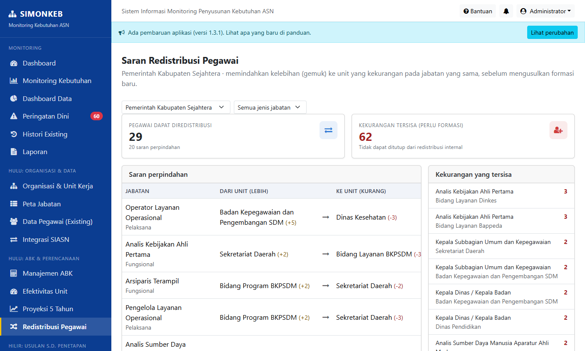
Fungsi: Mencatat formasi yang sudah terisi per jabatan sebagai pengurang kebutuhan.
Hasil yang diharapkan: Tabel formasi tampil.
Hasil pengujian: Halaman formasi tampil.
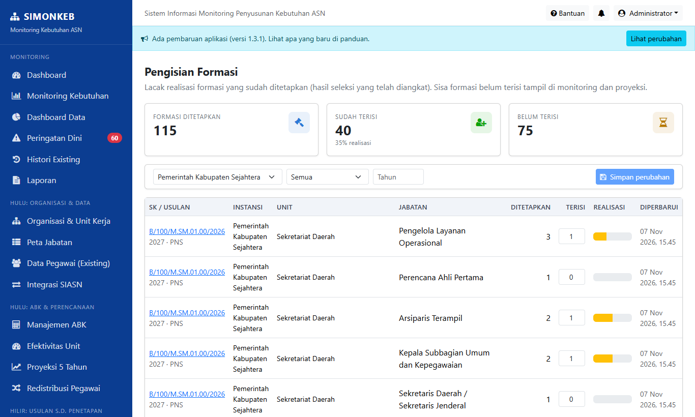
draft → diajukan → verifikasi BKN → pertimbangan teknis → validasi Kemenpan → ditetapkan, dengan cabang dikembalikan/ditolak.
Hubungan dengan tahap sebelumnya: Kebutuhan hasil ABK dan perencanaan dirangkum menjadi usulan, lalu diproses lintas peran sampai ditetapkan atau ditolak.
Fungsi: Operator hanya melihat usulan instansinya.
Hasil yang diharapkan: Hanya usulan Kabupaten Sejahtera tampil.
Hasil pengujian: 1 baris usulan (hanya instansi sendiri).
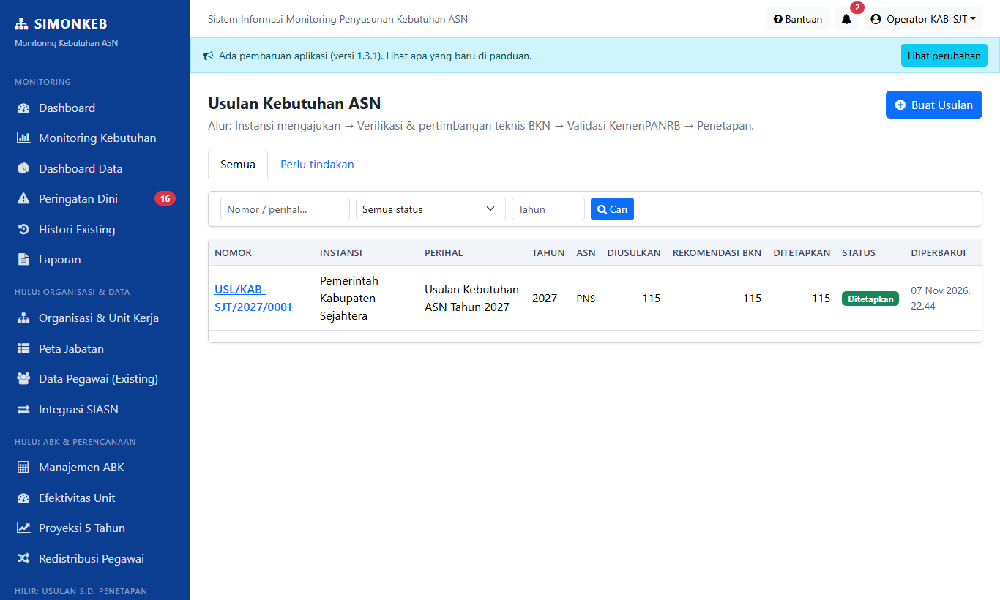
Fungsi: Operator membuat usulan; hanya draft yang dapat dihapus.
Hasil yang diharapkan: Usulan draft terbentuk lalu terhapus.
Usulan Uji Dokumentasi.Hasil pengujian: Draft terbentuk di /usulan/5
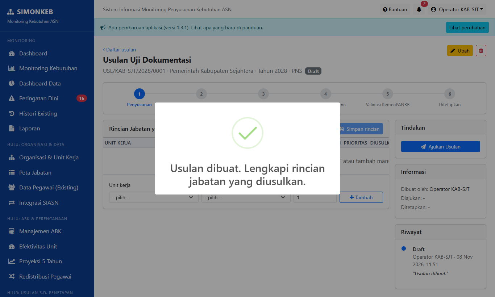
Fungsi: Rincian jabatan diusulkan dapat ditarik otomatis dari hasil ABK, diubah, lalu diajukan.
Hasil yang diharapkan: Rincian terisi dari ABK; status berubah menjadi *diajukan*.
/usulan/4).Hasil pengujian: 61 baris rincian; status sekarang: Diajukan Instansi.
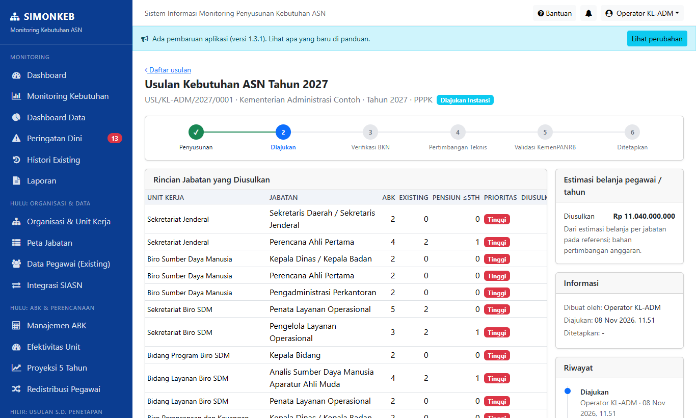
Fungsi: BKN memeriksa kelengkapan dan mulai memverifikasi usulan yang diajukan.
Hasil yang diharapkan: Status menjadi *verifikasi BKN*.
/usulan/4.Hasil pengujian: Status: Verifikasi BKN
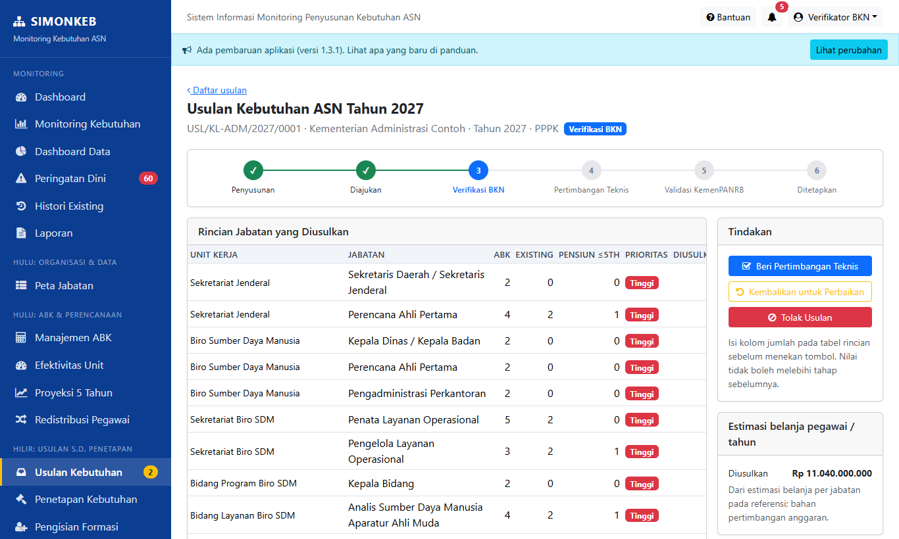
Fungsi: BKN mengisi jumlah rekomendasi per jabatan (tidak boleh melebihi jumlah diusulkan).
Hasil yang diharapkan: Status menjadi *pertimbangan teknis*.
Hasil pengujian: Status: Pertimbangan Teknis BKN
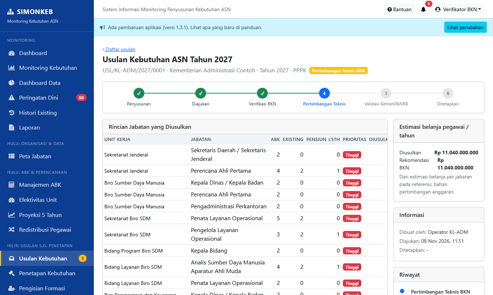
Fungsi: Kemenpan memvalidasi hasil pertimbangan teknis.
Hasil yang diharapkan: Status menjadi *validasi Kemenpan*.
/usulan/4.Hasil pengujian: Status: Validasi KemenPANRB
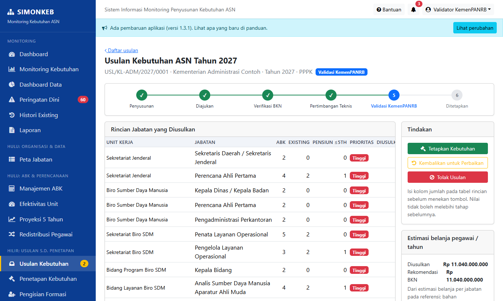
Fungsi: Penetapan akhir: mengisi jumlah ditetapkan serta data SK, lalu membuat lampiran penetapan.
Hasil yang diharapkan: Status *ditetapkan*; lampiran penetapan tersedia dan PDF dapat diunduh.
SK-UJI/2026/001 dan Tanggal SK.Hasil pengujian: Ditetapkan. Lampiran: HTTP 200, application/pdf, 886.962 byte
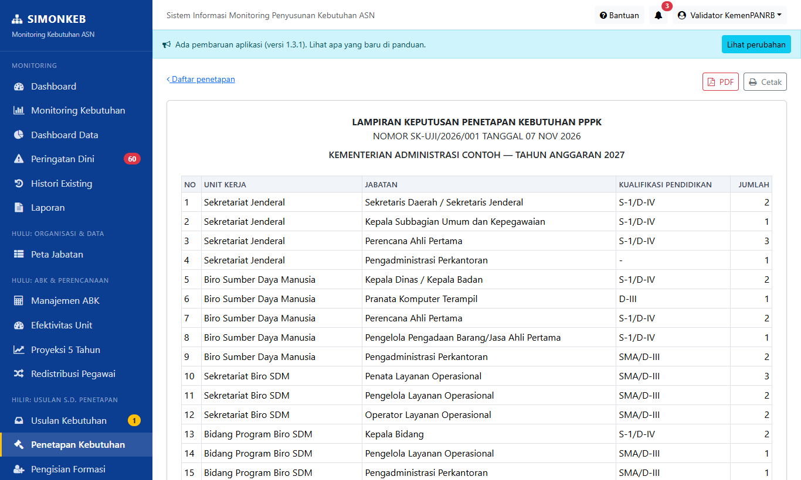
Fungsi: BKN mengembalikan usulan dengan catatan; operator memperbaiki lalu mengajukan ulang.
Hasil yang diharapkan: Status *dikembalikan* dengan catatan terlihat.
/usulan/3).Lengkapi lampiran ABK dan konfirmasi.Hasil pengujian: Status: Dikembalikan (Perbaikan), catatan tampil.
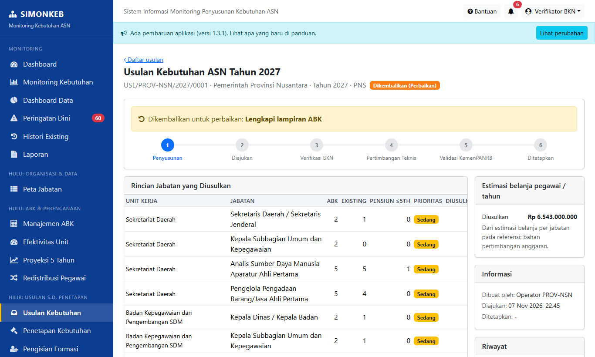
Fungsi: Siklus perbaikan oleh operator.
Hasil yang diharapkan: Banner pengembalian tampil; status kembali *diajukan*.
/usulan/3.Hasil pengujian: Diajukan ulang; status: Diajukan Instansi
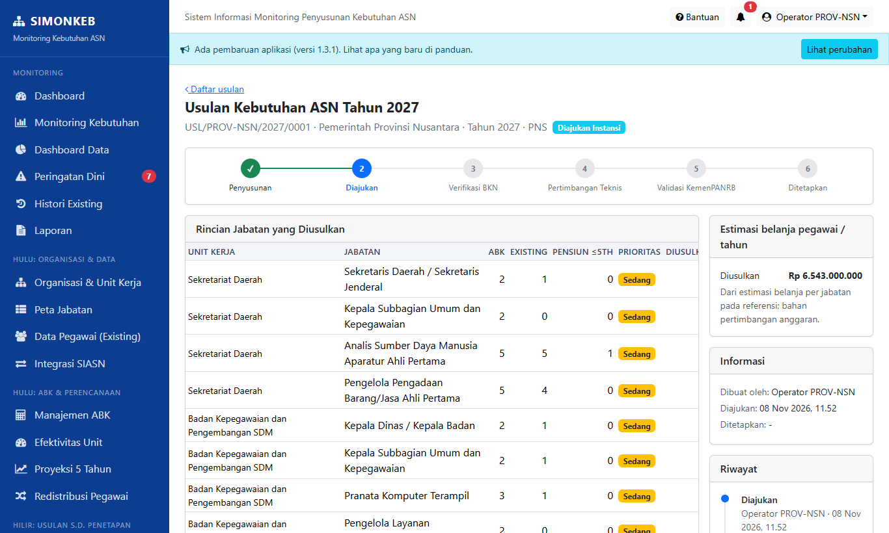
Fungsi: Kemenpan dapat menolak usulan pada tahap validasi dengan alasan wajib.
Hasil yang diharapkan: Status *ditolak* dengan alasan terlihat.
/usulan/2).Tidak sesuai peta jabatan dan konfirmasi.Hasil pengujian: Status: Ditolak, alasan tampil.
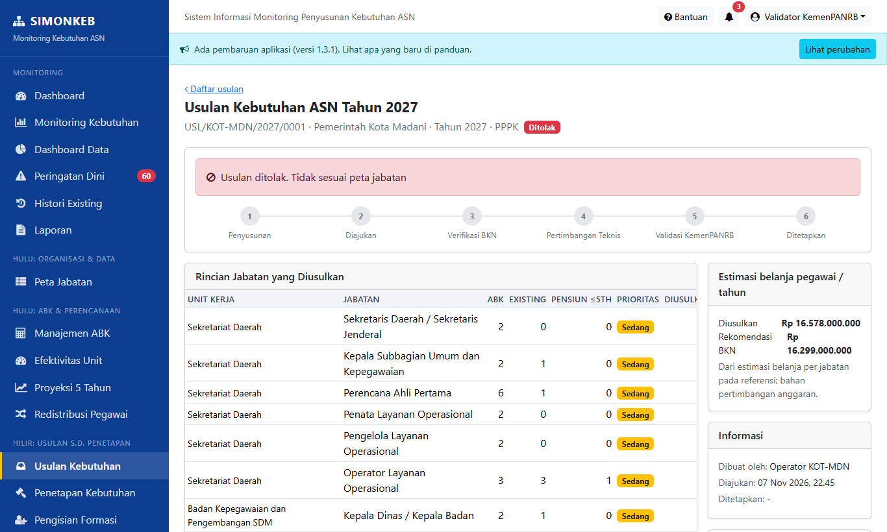
Fungsi: Arsip SK penetapan kebutuhan.
Hasil yang diharapkan: SK hasil alur di atas tampil.
SK-UJI.Hasil pengujian: 2 penetapan terdaftar.
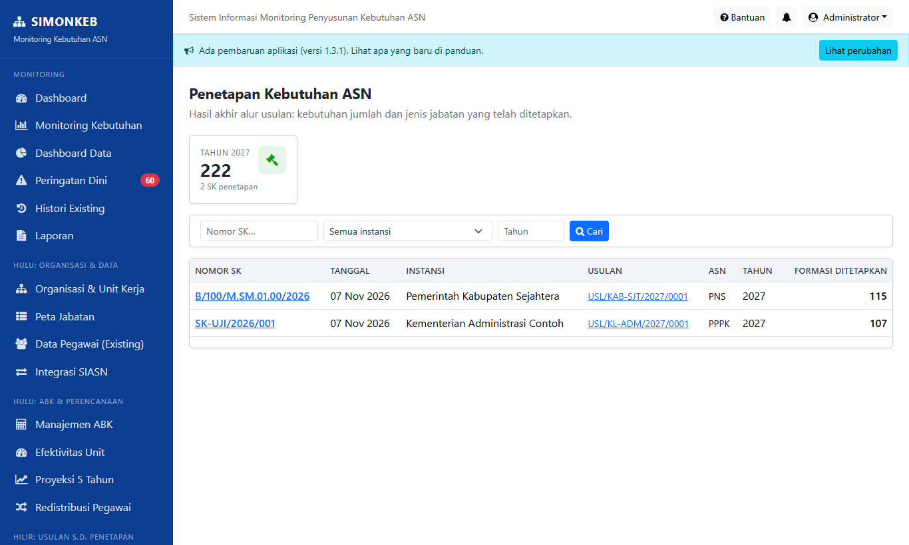
Pemantauan kebutuhan vs existing dan keluaran pelaporan.
Hubungan dengan tahap sebelumnya: Setelah usulan berjalan, tahap ini memantau capaiannya dan menghasilkan laporan untuk pimpinan.
Fungsi: Selisih kebutuhan dan pegawai per instansi → unit → jabatan, dengan status kurang/lebih/kosong.
Hasil yang diharapkan: Tabel tampil; drill-down berfungsi; ekspor sukses.
Hasil pengujian: Drill-down OK. Ekspor: HTTP 200, application/vnd.openxmlformats-officedocument.spreadsheetml.sheet, 23.157 byte
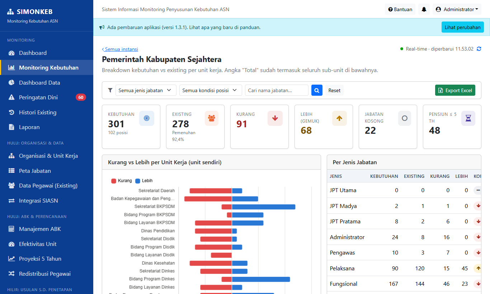
Fungsi: Grafik perbandingan dan sebaran.
Hasil yang diharapkan: Grafik tampil tanpa galat.
Hasil pengujian: Halaman analitik tampil.
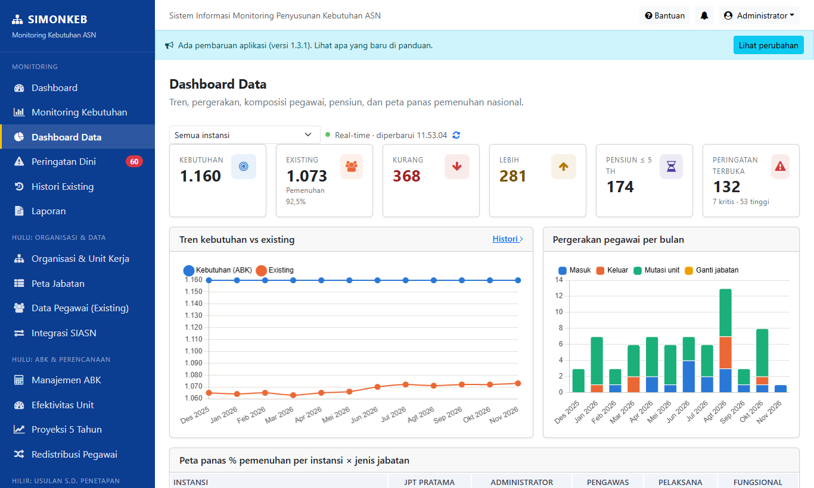
Fungsi: Tren existing 12 bulan dan deteksi unit yang datanya tidak bergerak (potensi tidak diperbarui).
Hasil yang diharapkan: Tren tampil; ekspor sukses.
Hasil pengujian: Histori tampil. Ekspor: HTTP 200, application/vnd.openxmlformats-officedocument.spreadsheetml.sheet, 6.970 byte
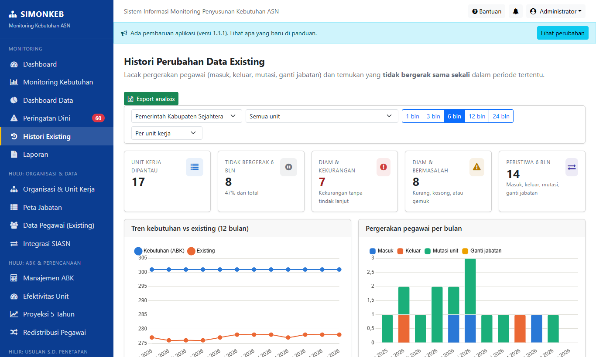
Fungsi: Mendeteksi anomali (jabatan kosong, pensiun mendekat, data diam, dll.) dan mencatat tindak lanjut.
Hasil yang diharapkan: Deteksi berjalan; tindak lanjut tersimpan.
Hasil pengujian: Deteksi dijalankan dan tindak lanjut tersimpan.
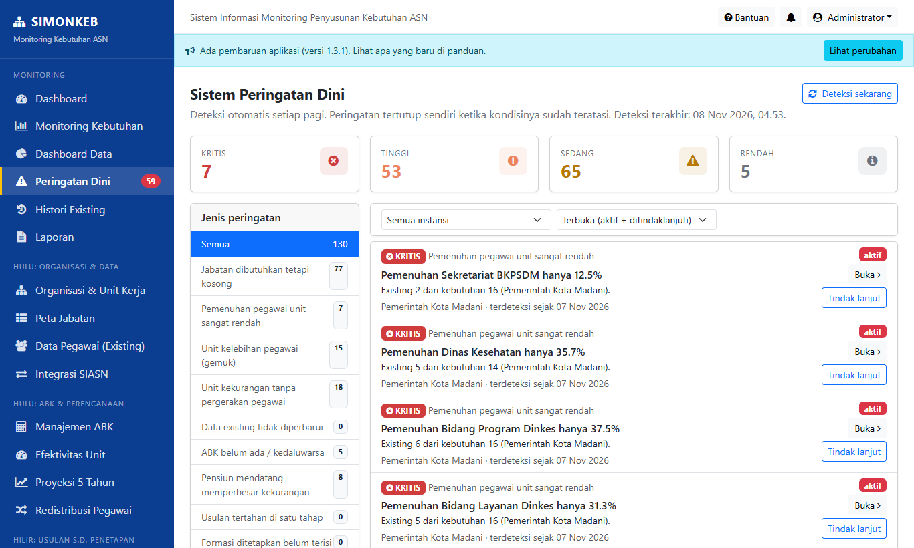
Fungsi: Sembilan jenis laporan, masing-masing dapat diunduh Excel dan PDF.
Hasil yang diharapkan: Semua unduhan HTTP 200 dengan tipe berkas benar.
Hasil pengujian: 9 jenis × 2 format berhasil. rekap_instansi: xlsx 6.954 byte, pdf 880.516 byte | rekap_unit: xlsx 6.541 byte, pdf 879.080 byte | rekap_jabatan: xlsx 7.751 byte, pdf 883.779 byte | posisi_bermasalah: xlsx 16.223 byte, pdf 954.221 byte | usulan_penetapan: xlsx 6.873 byte, pdf 880.034 byte | pensiun: xlsx 17.584 byte, pdf 932.305 byte | abk: xlsx 21.952 byte, pdf 986.026 byte | tidak_bergerak: xlsx 6.455 byte, pdf 878.524 byte | peringatan: xlsx 11.933 byte, pdf 917.682 byte
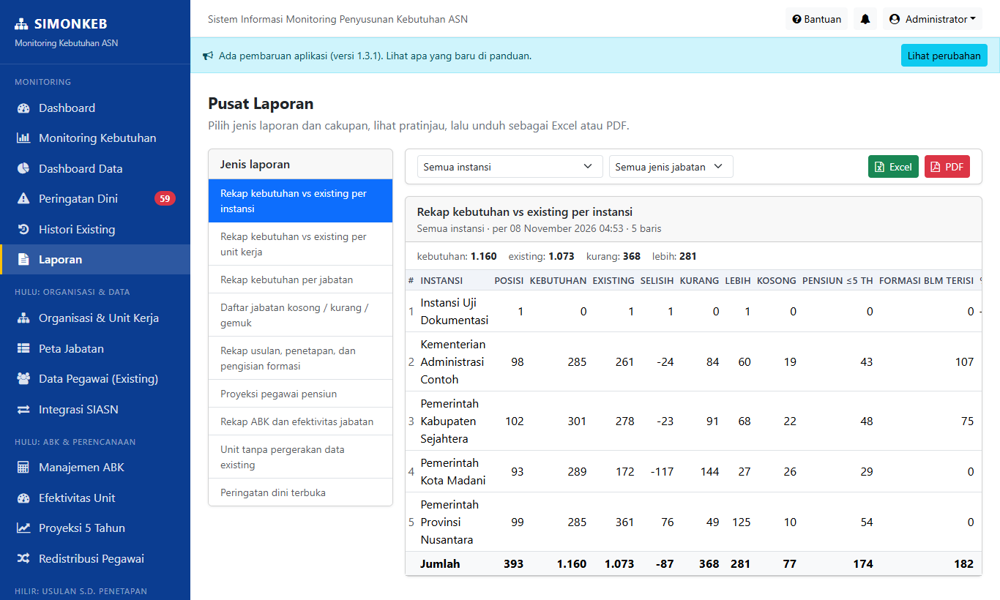
Manajemen pengguna, akun pribadi, notifikasi, audit, panduan.
Hubungan dengan tahap sebelumnya: Tahap penutup: pengelolaan pengguna dan fitur pendukung yang menopang seluruh tahap sebelumnya.
Fungsi: Admin membuat akun dengan peran dan (untuk operator) instansi.
Hasil yang diharapkan: Pengguna baru tampil di daftar.
Operator Uji, Email operator-uji@simonkeb.test, Password, Peran *Operator Instansi*, pilih Instansi uji.Hasil pengujian: Pengguna tersimpan.
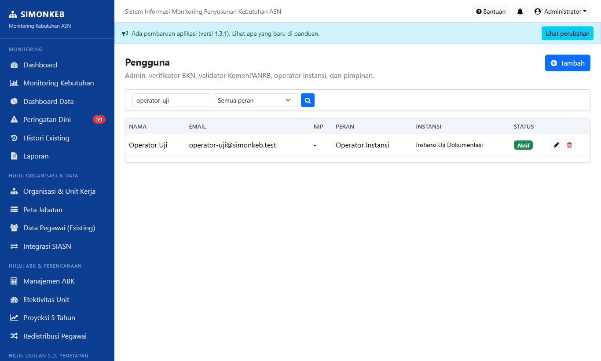
Fungsi: Penghapusan selalu lewat dialog konfirmasi SweetAlert.
Hasil yang diharapkan: Pengguna hilang dari daftar.
operator-uji.Hasil pengujian: Pengguna terhapus.
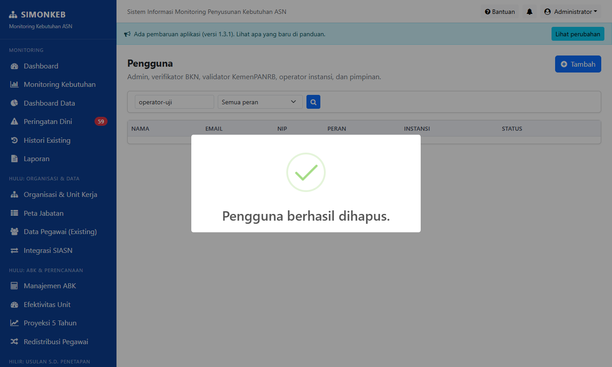
Fungsi: Pengguna mengganti password sendiri dan mengaktifkan autentikasi dua langkah.
Hasil yang diharapkan: Halaman tampil; password lama salah ditolak.
Hasil pengujian: Password lama salah ditolak.
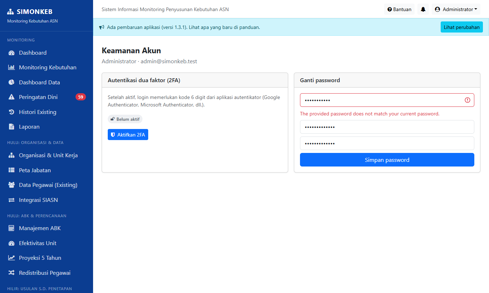
Fungsi: Pemberitahuan perubahan status usulan untuk peran terkait.
Hasil yang diharapkan: Daftar tampil; semua tertandai dibaca.
Hasil pengujian: Notifikasi tampil.
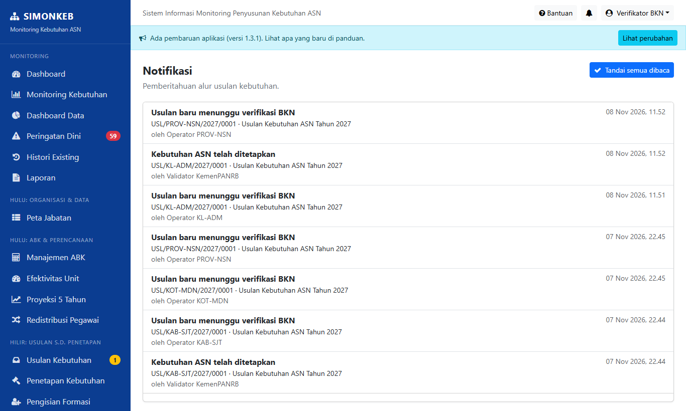
Fungsi: Jejak semua perubahan data (spatie/activitylog) — siapa, kapan, apa yang berubah.
Hasil yang diharapkan: Memuat aktivitas pengujian di atas (tambah instansi, penetapan, dll.).
Hasil pengujian: 12 entri pada halaman pertama.
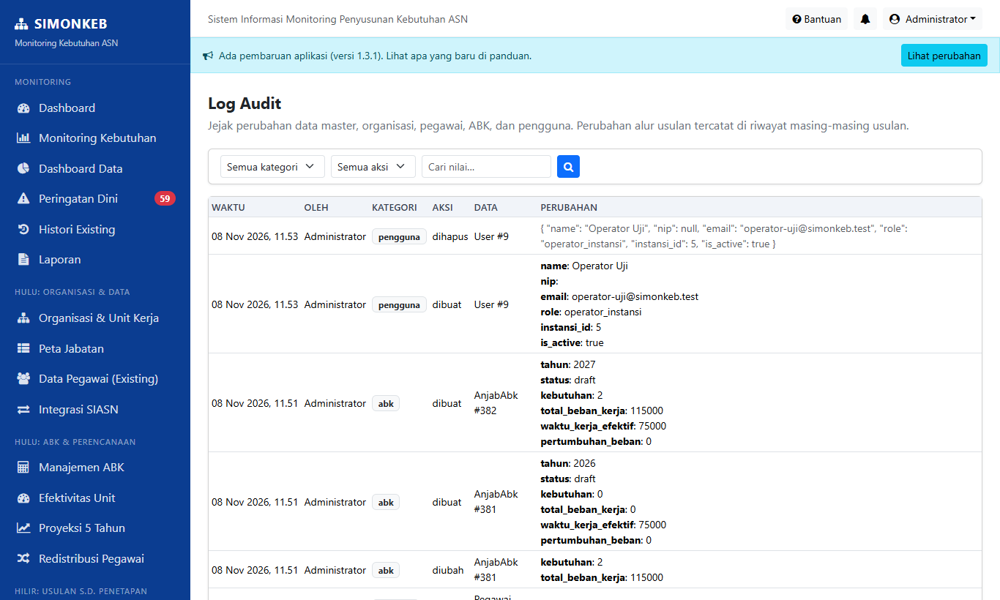
Fungsi: Panduan terintegrasi dalam aplikasi, dapat dicari dan diunduh PDF.
Hasil yang diharapkan: Panduan tampil; PDF terunduh.
usulan.Hasil pengujian: Panduan tampil. PDF: HTTP 200, application/pdf, 1.330.493 byte
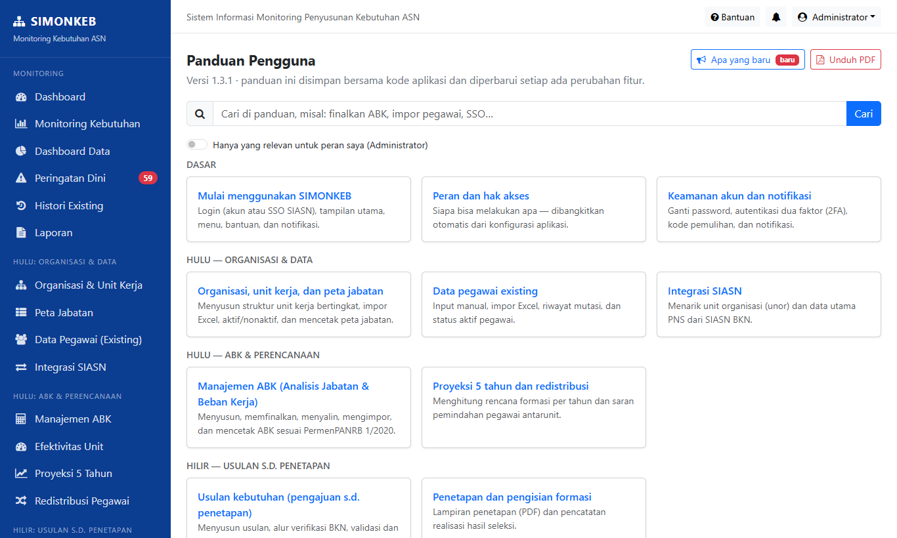
Fungsi: Penjelasan konstanta dan rumus ABK.
Hasil yang diharapkan: Halaman tampil.
Hasil pengujian: Pedoman tampil.
Fungsi: Instansi yang sudah punya usulan tidak boleh dihapus (hanya dinonaktifkan). Instansi tanpa usulan dapat dihapus, dan unit/pegawai di bawahnya ikut terhapus (cascade).
Hasil yang diharapkan: KL-ADM ditolak dengan pesan "tidak dapat dihapus, nonaktifkan saja". UJI-01 terhapus bersama unit dan pegawai ujinya.
KL-ADM (sudah punya usulan) → klik ikon tempat sampah → konfirmasi.UJI-01 (data uji, tanpa usulan) → hapus → konfirmasi.Hasil pengujian: KL-ADM ditolak: "Instansi yang sudah memiliki usulan tidak dapat dihapus. Nonaktifkan saja.". UJI-01 terhapus: "Instansi berhasil dihapus.".